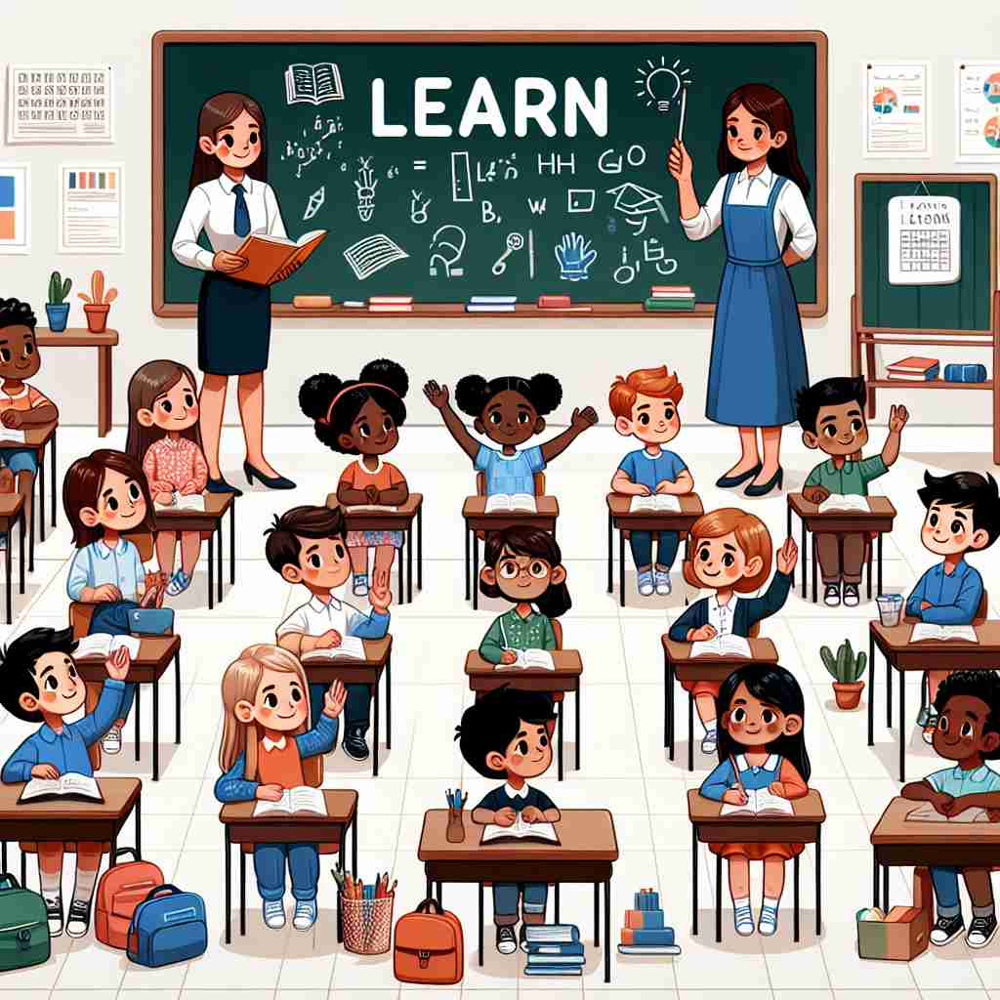

💬 The child is trying to learn to ride the tricycle with his parent's help.

💬 The students are excited to learn in class.
💬 She wants to learn to cook by following the tutorial on her tablet.

💬 The students are excited to learn from the teacher.
🔈 [lɜːn]
🗝️ v. to gain knowledge or skill by study, experience, or being taught
🖼️ 在一间明亮的教室里，一位学生正在专心听讲。他认真地做笔记，并时不时问老师问题，展示了'learn'作为通过学习、经验或教学获得知识或技能的过程。
🔍 想象你的大脑是一个不断吸收新知识的海绵。'Learn'的核心含义就是这个吸收的过程，无论是知识、技能、信息还是经验教训，都可以被你的大脑'学习'并吸收。这个核心概念贯穿了'learn'的各种用法，帮助你更容易理解和记忆它的多重含义。
💬 The child is trying to learn to ride the tricycle with his parent's help.
💬 The students are excited to learn in class.
💬 She wants to learn to cook by following the tutorial on her tablet.
💬 The students are excited to learn from the teacher.
🌳 由词根 "learn" 组成，没有前缀或后缀。这个词根源自古英语 "leornian"，意思是获得知识或技能。
💡 记忆 "learn" 可以通过联想 "耳闻" 和 "学习" 的过程，即通过听或观察来掌握新知。这个联想能够帮助理解学习的过程是不断积累和增长的。
🗝️ v. to become aware of by information or from observation
🖼️ 在一个繁忙的咖啡厅里，一位侦探正在观察四周。他注意到一个可疑人物不断偷看周围，并从中'learn'到一些有趣的信息，这展示了通过信息或观察而变得意识到的含义。
💬 I learned that he had left the country.
❓ 通过获取信息或观察来"学到"某事
🗝️ v. to commit to memory
🖼️ 在一个安静的卧室里，小女孩正在一字一句地背诵诗歌。她重复几遍后，终于能够流畅地背出整个诗句，展示了'learn'作为记忆下来的过程。
💬 You must learn your multiplication tables.
❓ 将知识"学习"并存储在记忆中
🗝️ v. to be informed of, to find out
🖼️ 在一家公司的会议室里，经理向员工们宣布一项重要的政策变更。员工们认真听讲，并迅速在笔记本上记录下要点，展示了'learn'作为被通知或者发现的含义。
💬 I learned about the accident from the news.
❓ 通过"学习"来获知信息
🗝️ v. to acquire a skill or ability
🖼️ 在一个音乐教室里，一个男孩正在学习弹钢琴。他反复练习几个音符，经过一段时间后，能够流畅弹奏一首简单的曲子，展示了'learn'意味着获得一项技能或能力。
💬 He is learning to drive.
❓ 通过练习"学习"获得技能
🗝️ v. to change one's behavior based on experience or teaching
🖼️ 在一个满是电子设备的实验室里，一名科学家因为之前的失败实验，调整了实验方法。经过一番尝试，他的实验终于成功，这展示了'learn'作为基于经验或教学改变行为的过程。
💬 You'll learn to be more patient with time.
❓ 通过"学习"经验来改变行为